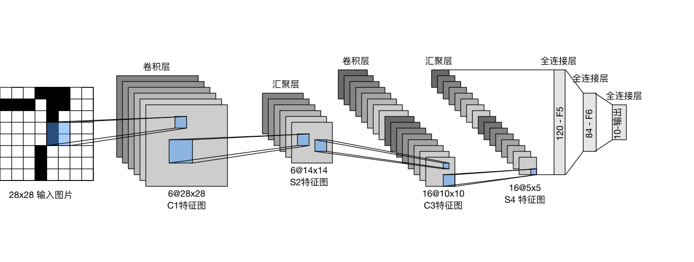
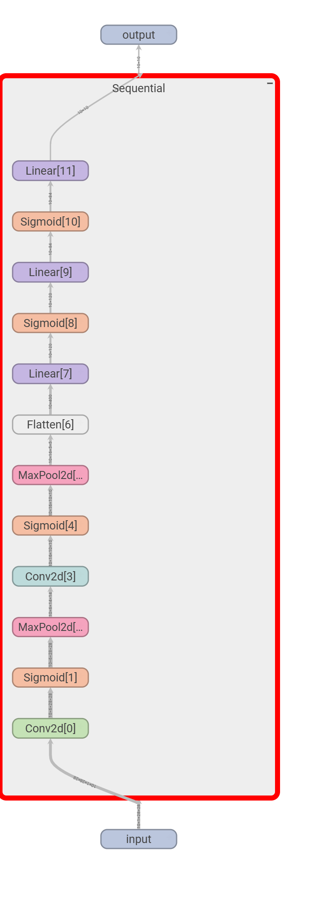
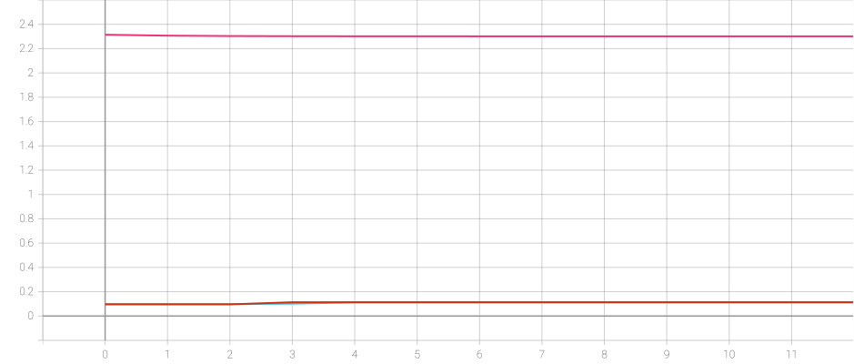
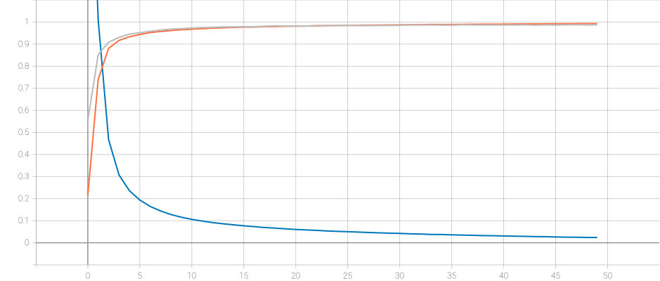

from torch import nn
import torch
from torch.utils.data import DataLoader
from torchvision import datasets, transforms
from torch.utils.tensorboard import SummaryWriter
import time
from datetime import datetime
import os卷积神经网络LeNet
LeNet-5
LeNet 是一种经典的早期卷积神经网络（CNN），其结构主要由两个卷积层（卷积层-Sigmoid激活层-平均池化层）和三个全连接层组成：输入为32×32的单通道图像，经过第一次卷积和池化后得到较小的特征图，再进行第二次卷积和池化（使用 5 \times 5 的卷积核和 2 \times 2 池化），最终通过多个全连接层输出分类结果（手写数字是0-9），全连接层包含120单元、84单元和10单元的输出层（通常用Softmax激活，原版使用RBF）。

创建模型
先导入必要的包
可以用torch.device定义训练使用的设备（cuda或者cpu），设定好device后，还需要对神经网络模型、训练数据、损失函数使用to(device)方法。
# 定义训练的设备
device = torch.device('cuda')PyTorch中，框架定义的各种神经网络层位于torch.nn下面，可以用torch.nn.Sequential组合成自定义的神经网络模型。
net = nn.Sequential(
nn.Conv2d(1, 6, kernel_size=5, stride=1, padding=2),
nn.Sigmoid(),
nn.MaxPool2d(kernel_size=2, stride=2),
nn.Conv2d(6, 16, kernel_size=5, stride=1, padding=0),
nn.Sigmoid(),
nn.MaxPool2d(kernel_size=2, stride=2),
nn.Flatten(),
nn.Linear(16 * 5 * 5, 120),
nn.Sigmoid(),
nn.Linear(120, 84),
nn.Sigmoid(),
nn.Linear(84, 10)
)
print(net)Sequential(
(0): Conv2d(1, 6, kernel_size=(5, 5), stride=(1, 1), padding=(2, 2))
(1): Sigmoid()
(2): MaxPool2d(kernel_size=2, stride=2, padding=0, dilation=1, ceil_mode=False)
(3): Conv2d(6, 16, kernel_size=(5, 5), stride=(1, 1))
(4): Sigmoid()
(5): MaxPool2d(kernel_size=2, stride=2, padding=0, dilation=1, ceil_mode=False)
(6): Flatten(start_dim=1, end_dim=-1)
(7): Linear(in_features=400, out_features=120, bias=True)
(8): Sigmoid()
(9): Linear(in_features=120, out_features=84, bias=True)
(10): Sigmoid()
(11): Linear(in_features=84, out_features=10, bias=True)
)卷积层和池化层的参数需要根据输入和输出大小来决定padding和stride的值，公式如下
\begin{aligned} OH &= \frac{H + 2P - FH}{S} + 1 \\ OW &= \frac{W + 2P - FW}{S} + 1 \end{aligned}
创建好模型之后，使用tensorboard将神经网络可视化。
# 添加tensorboard
log_dir = r'./logs'
# 自动创建新目录
os.makedirs(log_dir, exist_ok=True)
writer = SummaryWriter(log_dir) # 自定义目录
dummy_input = torch.rand((10, 1, 28, 28))
writer.add_graph(net, dummy_input)
writer.close()利用tensorboard的SummaryWriter可以很方便的画出各种图，常用的有add_image和add_scalar。别忘了使用完之后调用close关闭资源。add_graph输出如下

加载数据集
PyTorch可以使用torchvision.dataset下载在线数据集，并用torchvision.transforms和torch.utils.data.DataLoader对数据进行预处理，并返回迭代器对象。此外，如果要构建自己的数据集，只要继承torch.utils.data.dataset类，并重写__getitem__ 和 __len__方法。
batch_size = 100
transform = transforms.Compose([
transforms.ToTensor()
])
train_dataset = datasets.MNIST( # 下载MNIST训练数据集
root='./data',
train=True,
transform=transform,
download=True
)
test_dataset = datasets.MNIST( # 下载MNIST测试数据集
root='./data',
train=False,
transform=transform,
download=True
)
train_iter = DataLoader(
dataset=train_dataset,
batch_size=batch_size, # 批量大小
shuffle=True, # 打乱数据
num_workers=4 # 线程数
)
test_iter = DataLoader(
dataset=test_dataset,
batch_size=batch_size,
shuffle=False,
num_workers=4
)训练模型
训练模型前还要先定义损失函数和优化器，损失函数可以使用nn.CrossEntropyLoss()交叉熵损失，它与之前的softmax_with_loss一样实现了softmax和交叉熵损失的组合。优化器位于torch.optim下，原版这里使用SGD，收敛速度很慢。最后不要忘了对损失函数调用to(device)方法选择训练设备。
# 总数据集大小
train_data_size = len(train_dataset)
test_data_size = len(test_dataset)
train_iter_size = len(train_dataset) // batch_size
test_iter_size = len(test_dataset) // batch_size
print(f'训练数据集大小：{train_data_size}, 测试数据集大小：{test_data_size}')
# 定义模型
net = net.to(device)
# 超参数
learning_rate = 3e-4
num_epochs = 50
# 损失函数和优化器
loss_fn = nn.CrossEntropyLoss()
loss_fn = loss_fn.to(device)
optimizer = torch.optim.SGD(net.parameters(), lr=learning_rate)
# 记录训练和测试的步数
total_train_steps = 0
# 添加tensorboard
# 生成时间戳目录名
log_dir = r'./logs/unoptimized_logs'
# 自动创建新目录
os.makedirs(log_dir, exist_ok=True)
writer = SummaryWriter(log_dir) # 自定义目录
for epoch in range(num_epochs):
print(f'==========第 {epoch + 1} 轮训练开始==========')
start_time = time.time()
# 训练阶段
net.train()
total_train_accuracy = 0
total_train_loss = 0
for train_batch, label in train_iter:
train_batch = train_batch.to(device)
label = label.to(device)
output = net(train_batch)
loss = loss_fn(output, label)
# 优化器模型
optimizer.zero_grad()
loss.backward()
optimizer.step()
total_train_steps +=1
# 累计损失率
total_train_loss += loss
# 累计准确度
accuracy = (output.argmax(1) == label).sum()
total_train_accuracy += accuracy
if total_train_steps % (train_iter_size // 5) == 0:
print(f'训练进度：{total_train_steps}/{train_iter_size * num_epochs}，loss：{loss.item()}')
# 测试阶段
net.eval()
total_test_accuracy = 0
with torch.no_grad():
for test_batch, label in test_iter:
test_batch = test_batch.to(device)
label = label.to(device)
output = net(test_batch)
loss = loss_fn(output, label)
accuracy = (output.argmax(1) == label).sum()
total_test_accuracy += accuracy
train_loss = total_train_loss/train_iter_size
train_acc = total_train_accuracy/train_data_size
test_acc = total_test_accuracy/test_data_size
# 绘制图表
writer.add_scalars("LeNet-5", {
'train_loss_epoch': train_loss,
'train_acc_epoch': train_acc,
'test_acc_epoch': test_acc
}, epoch)
end_time = time.time()
print(f"训练集损失：{train_loss}，训练集准确度：{train_acc}，测试集准确度：{test_acc}")
print(f"训练耗时：{(end_time - start_time):2f}")
print(f'==========第 {epoch + 1} 轮训练结束==========')
torch.save(net.state_dict, f"LeNet_unoptimized.pth")
writer.close()tensorboard生成训练过程的图像

优化训练过程
对输入进行归一化transforms.Normalize((0.1307,), (0.3081,))，这两个值是通过计算MNIST训练集的60,000张图像得到的统计量。
batch_size = 100
transform = transforms.Compose([
transforms.ToTensor(), # 将图像转换为张量并缩放到[0,1]
transforms.Normalize((0.1307,), (0.3081,)) # 单通道归一化
])
train_iter = DataLoader(
dataset=train_dataset,
batch_size=batch_size, # 批量大小
shuffle=True, # 打乱数据
num_workers=4 # 线程数
)
test_iter = DataLoader(
dataset=test_dataset,
batch_size=batch_size,
shuffle=False,
num_workers=4
)将Sigmoid改成ReLU，优化器改成Adam
net2 = nn.Sequential(
nn.Conv2d(1, 6, kernel_size=5, stride=1, padding=2),
nn.ReLU(),
nn.MaxPool2d(kernel_size=2, stride=2),
nn.Conv2d(6, 16, kernel_size=5, stride=1, padding=0),
nn.ReLU(),
nn.MaxPool2d(kernel_size=2, stride=2),
nn.Flatten(),
nn.Linear(16 * 5 * 5, 120),
nn.ReLU(),
nn.Linear(120, 84),
nn.ReLU(),
nn.Linear(84, 10)
)
net2Sequential(
(0): Conv2d(1, 6, kernel_size=(5, 5), stride=(1, 1), padding=(2, 2))
(1): ReLU()
(2): MaxPool2d(kernel_size=2, stride=2, padding=0, dilation=1, ceil_mode=False)
(3): Conv2d(6, 16, kernel_size=(5, 5), stride=(1, 1))
(4): ReLU()
(5): MaxPool2d(kernel_size=2, stride=2, padding=0, dilation=1, ceil_mode=False)
(6): Flatten(start_dim=1, end_dim=-1)
(7): Linear(in_features=400, out_features=120, bias=True)
(8): ReLU()
(9): Linear(in_features=120, out_features=84, bias=True)
(10): ReLU()
(11): Linear(in_features=84, out_features=10, bias=True)
)# 总数据集大小
train_data_size = len(train_dataset)
test_data_size = len(test_dataset)
train_iter_size = len(train_dataset) // batch_size
test_iter_size = len(test_dataset) // batch_size
print(f'训练数据集大小：{train_data_size}, 测试数据集大小：{test_data_size}')
# 定义模型
net = net.to(device)
# 超参数
learning_rate = 3e-4
num_epochs = 50
# 损失函数和优化器
loss_fn = nn.CrossEntropyLoss()
loss_fn = loss_fn.to(device)
optimizer = torch.optim.Adam(net.parameters(), lr=learning_rate)
# 记录训练和测试的步数
total_train_steps = 0
# 添加tensorboard
# 生成时间戳目录名
log_dir = r'./logs/optimized_logs'
# 自动创建新目录
os.makedirs(log_dir, exist_ok=True)
writer = SummaryWriter(log_dir) # 自定义目录
for epoch in range(num_epochs):
print(f'==========第 {epoch + 1} 轮训练开始==========')
start_time = time.time()
# 训练阶段
net.train()
total_train_accuracy = 0
total_train_loss = 0
for train_batch, label in train_iter:
train_batch = train_batch.to(device)
label = label.to(device)
output = net(train_batch)
loss = loss_fn(output, label)
# 优化器模型
optimizer.zero_grad()
loss.backward()
optimizer.step()
total_train_steps +=1
# 累计损失率
total_train_loss += loss
# 累计准确度
accuracy = (output.argmax(1) == label).sum()
total_train_accuracy += accuracy
if total_train_steps % (train_iter_size // 5) == 0:
print(f'训练进度：{total_train_steps}/{train_iter_size * num_epochs}，loss：{loss.item()}')
# 测试阶段
net.eval()
total_test_accuracy = 0
with torch.no_grad():
for test_batch, label in test_iter:
test_batch = test_batch.to(device)
label = label.to(device)
output = net(test_batch)
loss = loss_fn(output, label)
accuracy = (output.argmax(1) == label).sum()
total_test_accuracy += accuracy
train_loss = total_train_loss/train_iter_size
train_acc = total_train_accuracy/train_data_size
test_acc = total_test_accuracy/test_data_size
# 绘制图表
writer.add_scalars("LeNet-5_optimized", {
'train_loss_epoch': train_loss,
'train_acc_epoch': train_acc,
'test_acc_epoch': test_acc
}, epoch)
end_time = time.time()
print(f"训练集损失：{train_loss}，训练集准确度：{train_acc}，测试集准确度：{test_acc}")
print(f"训练耗时：{(end_time - start_time):2f}")
print(f'==========第 {epoch + 1} 轮训练结束==========')
torch.save(net.state_dict, f"LeNet_optimized.pth")
writer.close()tensorboard生成训练过程的图像

总结
使用正则化、RelU激活函数、Adam优化器均能提升训练效率（提升至99%+）。
归一化 - 防止过拟合 - 提高泛化能力
ReLU - 无梯度消失 - 提升计算效率
Adam - 自适应学习率 - 跳过局部最优解